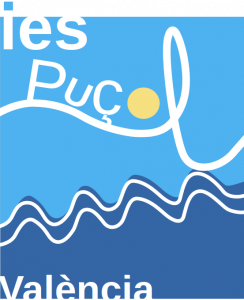
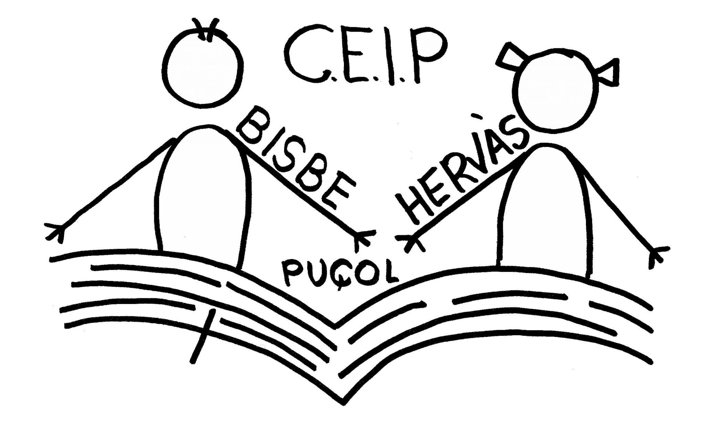

Sobre Mí
Soy Víctor Vázquez, estudiante y desarrollador web apasionado por la tecnología y el aprendizaje constante. Me especializo en frontend y backend, con experiencia en HTML, CSS, JavaScript y PHP. Me gusta resolver problemas técnicos, optimizar sistemas y crear proyectos útiles.
Actualmente curso Desarrollo de Aplicaciones Web y participo en proyectos como tiendas online y sistemas de reservas de coworking. Disfruto trabajar en equipo y siempre busco mejorar tanto en programación como en diseño web.
Educación
Detalles sobre mi formación académica.

IES Puçol
Educación Secundaria Obligatoria (ESO)
2018-2022

IES Camp de Morvedre
Sistemas Microinformáticos y Redes (SMR)
2022-2024
IES Camp de Morvedre
Desarrollo de Aplicaciones Web (DAW)
2024-2026
Experiencia
Detalles sobre mi experiencia laboral.

CEIP Bisbe Hervas
Practicas como soporte de técnico informatico
Marzo de 2024 - Junio de 2024
Habilidades
Detalles sobre mis habilidades y competencias.

HTML:
Nivel intermedio

CSS:
Nivel intermedio

JavaScript:
Nivel básico

PHP:
Nivel básico

MySQL:
Nivel básico

Java:
Nivel básico
Proyectos
Detalles sobre mis proyectos destacados.
IES Camp de Morvedre
Proyecto intermodular 1º DAW: SecondHand, tienda de ropa
Tienda de ropa realizada en Java y JavaFX como proyecto intermodular de 1º de DAW
Preguntas frecuentes
-
¿Qué lenguajes de programación utilizas?
Principalmente HTML, CSS, JavaScript, PHP y MySQL. También tengo experiencia básica con Java.
-
¿Cuánto tiempo llevas programando?
Llevo estudiando y desarrollando pequeños proyectos desde 2024, con experiencia práctica en diseño web y sistemas backend.
-
¿Puedes ayudarme con mi proyecto web?
Sí, puedo ofrecer orientación sobre desarrollo web, optimización y solución de problemas técnicos.